Evaluation strategies
Source:vignettes/articles/evaluation-strategies.Rmd
evaluation-strategies.RmdIntro
In the previous articles you have learned how to prepare the data for the analysis, how to train a model, how to make predictions and how to evaluate a model using SDMtune. In this article you will learn different evaluation strategies to achieve a better estimate of the model performance.
Training and testing datasets
First we load the SDMtune package:
library(SDMtune)
#>
#> _____ ____ __ ___ __
#> / ___/ / __ \ / |/ // /_ __ __ ____ ___
#> \__ \ / / / // /|_/ // __// / / // __ \ / _ \
#> ___/ // /_/ // / / // /_ / /_/ // / / // __/
#> /____//_____//_/ /_/ \__/ \__,_//_/ /_/ \___/ version 1.3.0.9000
#>
#> To cite this package in publications type: citation("SDMtune").It’s always a good practice to split the species locations into two
parts and use one part to train the model and the remaining part to
evaluate it. We can use the trainValTest() function for
this purpose. Let’s say we want to use 80% of the species locations to
train our model and 20% as testing dataset to evaluate it:
library(zeallot) # For unpacking assignment
c(train, test) %<-% trainValTest(data,
test = 0.2,
only_presence = TRUE,
seed = 25)
maxnet_model <- train("Maxnet",
data = train)The only_presence argument is used to split only the
presence and not the background locations. We can now evaluate the model
using the testing dataset that has not been used to train the model:
cat("Training auc: ", auc(maxnet_model))
#> Training auc: 0.8752144
cat("Testing auc: ", auc(maxnet_model, test = test))
#> Testing auc: 0.8505888We can plot the ROC curve for both, training and testing datasets, with:
plotROC(maxnet_model,
test = test)
#> Warning: The following aesthetics were dropped during statistical transformation: m, d
#> ℹ This can happen when ggplot fails to infer the correct grouping structure in
#> the data.
#> ℹ Did you forget to specify a `group` aesthetic or to convert a numerical
#> variable into a factor?
This approach is valid when we have a large dataset. In our case, with only 320 observations, the evaluation depends strongly on how we split our presence locations. Let’s run a small experiment in which we perform different train/test splits and we compute the AUC:
output <- data.frame(matrix(NA, nrow = 10, ncol = 3)) # Create an empty data.frame
colnames(output) <- c("seed", "trainAUC", "testAUC")
set.seed(25)
seeds <- sample.int(1000, 10) # Create 10 different random seeds
for (i in seq_along(seeds)) { # Loop through the seeds
c(train, test) %<-% trainValTest(data,
test = 0.2,
seed = seeds[i],
only_presence = TRUE) # Make the train/test split
m <- train("Maxnet",
data = train) # train the model
# Populate the output data.frame
output[i, 1] <- seeds[i]
output[i, 2] <- auc(m)
output[i, 3] <- auc(m, test = test)
}The testing AUC varies from 0.834 to 0.867.
# Print the output
output| seed | trainAUC | testAUC |
|---|---|---|
| 647 | 0.8698272 | 0.8552425 |
| 477 | 0.8782434 | 0.8340675 |
| 536 | 0.8680666 | 0.8656850 |
| 444 | 0.8735606 | 0.8566337 |
| 985 | 0.8712828 | 0.8565025 |
| 49 | 0.8719091 | 0.8519175 |
| 72 | 0.8719313 | 0.8661387 |
| 617 | 0.8743353 | 0.8529850 |
| 282 | 0.8695072 | 0.8671275 |
| 59 | 0.8709719 | 0.8671762 |
When we have to deal with a small dataset a better approach is the cross validation.
Cross validation
To perform a cross validation in SDMtune we have to
pass the fold argument to the train()
function. First we have to create the folds. There are several way to
create them, here we explain how to make a random partition of 4 folds
using the function randomFolds():
folds <- randomFolds(data,
k = 4,
only_presence = TRUE,
seed = 25)The output of the function is a list containing two matrices, the
first for the training and the second for the testing locations. Each
column of one matrix represents a fold with TRUE for the
locations included in and FALSE excluded from the
partition.
Let’s perform a 4 fold cross validation using the Maxnet method (note that we use the full dataset):
cv_model <- train("Maxnet",
data = data,
folds = folds)
cv_model#>
#> ── Object of class: <SDMmodelCV> ──
#>
#> Method: Maxnet
#>
#> ── Hyperparameters
#> • fc: "lqph"
#> • reg: 1
#>
#> ── Info
#> • Species: Virtual species
#> • Replicates: 4
#> • Total presence locations: 400
#> • Total absence locations: 5000
#>
#> ── Variables
#> • Continuous: "bio1", "bio12", "bio16", "bio17", "bio5", "bio6", "bio7", and
#> "bio8"
#> • Categorical: "biome"The output in this case is an SDMmodelCV() object. It
contains the four trained models in the models slot and the
fold partitions in the folds slot. We can compute the AUC
of a SDMmodelCV() object using:
cat("Training AUC: ", auc(cv_model))
#> Training AUC: 0.8734151
cat("Testing AUC: ", auc(cv_model, test = TRUE))
#> Testing AUC: 0.8553538this returns the AUC value averaged across the four different models.
Try yourself
Repeat the analysis using the default_model that we
created in the train a
model article.
Spatial Cross Validation
The train() function accepts folds created with two
other packages:
-
ENMeval(Muscarella et al. 2014) -
blockCV(Valavi et al. 2019)
The function will convert internally the created folds into the
correct format for SDMtune. These packages have specific
function to create folds partitions that are spatially or
environmentally independent.
Block partition using the package ENMeval:
library(ENMeval)
block_folds <- get.block(occ = data@coords[data@pa == 1, ],
bg.coords = data@coords[data@pa == 0, ])
model <- train(method = "Maxnet",
data = data,
fc = "l",
reg = 0.8,
folds = block_folds)Checkerboard1 partition using the package ENMeval:
cb_folds <- get.checkerboard1(occ = data@coords[data@pa == 1, ],
env = predictors,
bg.coords = data@coords[data@pa == 0, ],
aggregation.factor = 4)
model <- train(method = "Maxnet",
data = data,
fc = "l",
reg = 0.8,
folds = cb_folds)Environmental block using the package blockCV:
library(blockCV)
# Create sf object
sf_df <- sf::st_as_sf(cbind(data@coords, pa = data@pa),
coords = c("X", "Y"),
crs = terra::crs(predictors,
proj = TRUE))
# Spatial blocks
spatial_folds <- cv_spatial(x = sf_df,
column = "pa",
rows_cols = c(8, 10),
k = 5,
hexagon = FALSE,
selection = "systematic")
model <- train(method = "Maxent",
data = data,
fc = "l",
reg = 0.8,
folds = spatial_folds)Conclusion
In this article you have learned:
- how to split the presence dataset in training and testing folds;
- how to evaluate the model using the held out testing dataset;
- how to create random folds for cross validation;
- how to perform a cross validation;
- how to use other packages to create the folds for the k-fold cross validation;
- how to evaluate an
SDMmodelCV()object.
In the next article you will learn how to display the variable importance and how to plot the response curve.